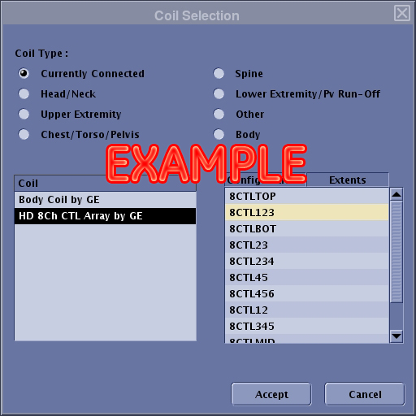
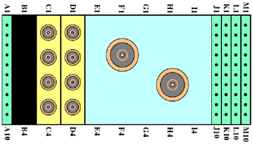

Operating Documentation
Direction 5670000, Rev# 1
Optima MR450w 1.5T Service Methods
Module Version 5.0, Version Date 10/27/09
Operating Documentation |
The following tips can be used to troubleshoot common problems with the HD 8-Channel Body Array Coil (GE/USAI P/N: 2415366).
The 8 Channel Body Array Coil must be installed in the system.
The following sections contain information about troubleshooting the HD 8-Channel Body Array Coil, if, for example, there is no signal or other problems occur.
Problem:
You are unable to pre-scan or are scanning and yet receiving no signal.
Possible Solution:
Verify that the port which is used to plug in the coil either has a green light illuminated (Port A or Port B) or a green lock (Port P1, P2, P3 or P4) indicated. This indicates the coil is properly plugged into the system.
Verify that the system has correctly detected the coil by checking the Currently Connected in the GUI shown in Illustration 1
Verify that the landmark is correct and that the cradle has not unlatched.
Verify that the scan locations and any FOV offsets are correct.
Perform a Continuity Check on the external cable using the instructions detailed in Section 3.4.2 (to be performed by a GE authorized Service Engineer only).
Illustration 1: Currently Connected Coils Window in the Scan Screen

If you still cannot get a signal, try to scan (transmit and receive) with the body coil. For this test, be sure to remove the Imaging Coil from the magnet bore before scanning with the body coil. If you still receive no signal, the problem probably lies with your MR system. If the scan completes successfully, there is probably a problem with the coil. Contact GE for further assistance.
Problem:
Image quality is not as good as you expect from the coil.
Possible Solution:
Perform Multi-Coil Quality Assurance (MCQA) Tool and review results.
Perform a Continuity Check on the external cable using the instructions detailed in Section 3.4.2 below (to be performed by a GE authorized Service Engineer only).
Verify that there are no loops in the cables.
Verify that there are no metal or ferromagnetic objects close to the coil, patient or magnet (i.e., safety pin, hair pin).
Verify that the coil is properly positioned.
Verify that your center frequency is within the frequency adjustment range for your system.
Verify that the R1, R2 and TG values from the pre-scan are within normally expected ranges.
Problem:
There is a black line or signal void on the image.
Possible Solution:
Verify that there is no metal present in the area being scanned in or on the patient.
Problem:
Some or all of the images appear shaded or exhibit uneven signal or banding.
Possible Solution:
Confirm that no metallic objects are located nearby, outside the FOV. This is especially important on images utilizing Fat Saturation.
If Fat Saturation is being used, verify that the CFA fine adjustment has been optimized.
Problem:
The system does not recognize the coil or scan with the coil attached.
| NOTE: | Under no circumstances should the continuity of the center pin of the coax connectors be measured. They may be extremely fragile when improper tools are used. |
Possible Solutions:
Check the physical condition of the following pins on the Hypertronics system connector. Refer to Illustration 2 and Illustration 3 to locate the pins on the Hypertronics system connector.
A1-A2; C1-C4; D1-D4; J1-J3; J4-J10; M3; M5-M10;
Illustration 2: Hypertronics Connector

Illustration 3: Hypertronics Pin Out

Replace the Cable assembly as per the Cable Replacement Procedure if any of the above-mentioned pins are damaged.
If all the pins are OK, perform Section 3.4.2.
Remove the cable as per procedure given in Section 4 (Step 1-5) of Cable Replacement procedure. Check the DC continuity between Coil Side Connectors (Anterior Interior Box with DC Connector Pin (Small Pin) and Posterior with 4 DC PIN Header Connector) and the Hypertronics coax connectors using Digital Voltmeter in resistance mode. Use some conductor pin to get the access to the center pin of the Anterior DC Pins. Perform the continuity check between the Hypertronics pin also as given in the Table 1. Replace the cable, if it fails to pass the continuity test specs given in Table 1. Also refer to Illustration 2 and Illustration 4.
Illustration 4: Coil Cable

Table 1: DC Continuity Check
| DC Continuity Check for Anterior Connector (small coax DC connector) | ||||
| SN | Anterior Interface Box DC Connector | Hypertronics system connector | Resistance (Ohms) Specification | |
| Refer to Illustration 2 and Illustration 3 | ||||
| 1 | 1 | J1 | 0.75 + 0.5 | |
| 2 | 2 | J3 | 0.75 + 0.5 | |
| 3 | 3 | J2 | 0.75 + 0.5 | |
| 4 | 4 | M3 | 3 + 0.5 | |
| DC Continuity Check for Posterior Connector (4 PIN HEADER CONN) | ||||
| Posterior side 4 PIN DC Header Connector (White) | Hypertronics system connector | Resistance (Ohms) Specification | ||
| Refer to Illustration 2 and Illustration 3 | ||||
| 5 | 1 (Red Wired) | J8 | 0.75 + 0.5 | |
| 6 | 2 (Grey Wired) | J6 | 0.75 + 0.5 | |
| 7 | 3 (Blue Wired) | J7 | 0.75 + 0.5 | |
| 8 | 4 (Brown Wired) | M3 | 3 + 0.5 | |
Check if any of the pins from J1-J3 and J6- J8 of Hypertronics system connector is shorted to the ground. The outside conductor of a coaxial connector in column C or D can be used as ground. If any of the pins is shorted to ground, replace the cable as per Cable Replacement Procedure.
Check for the ground pin continuity check between M5, M8 and the RF ground pin for C1. The resistance should be less than 1 Ohm. If it fails the ground pin continuity test, replace the cable as per Cable Replacement Procedure.
After the new cable is installed, perform the MCQA Test if it is available. Otherwise perform the SNR Test.